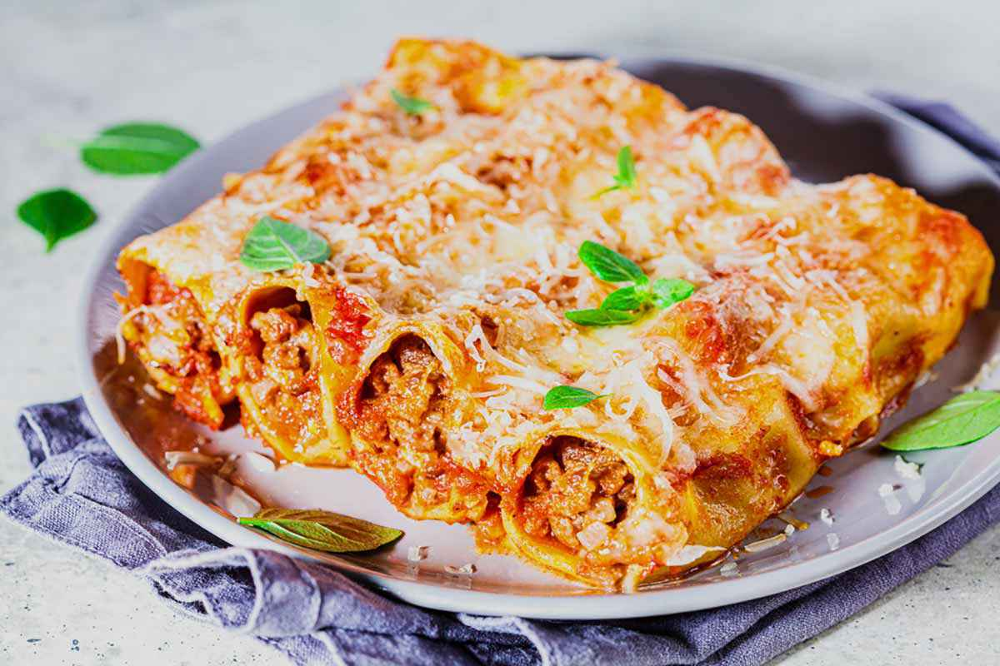
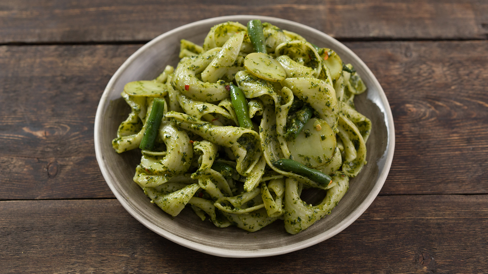

Ricetta carbonara
La carbonara è una pasta cremosa con uova, pancetta, formaggio e pepe nero. È un classico della cucina romana.
Vai alla ricetta

Ricetta cannelloni
I cannelloni sono un piatto italiano tradizionale. Sono tubi di pasta ripieni di deliziosi ingredienti e cotti in forno.
Vai alla ricetta

Ricetta pesto
Il pesto alla Genovese è una salsa a base di basilico, pinoli, aglio, formaggio e olio d'oliva. È una prelibatezza fresca e gustosa.
Vai alla ricetta